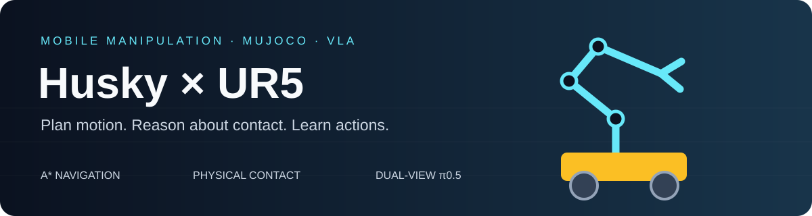
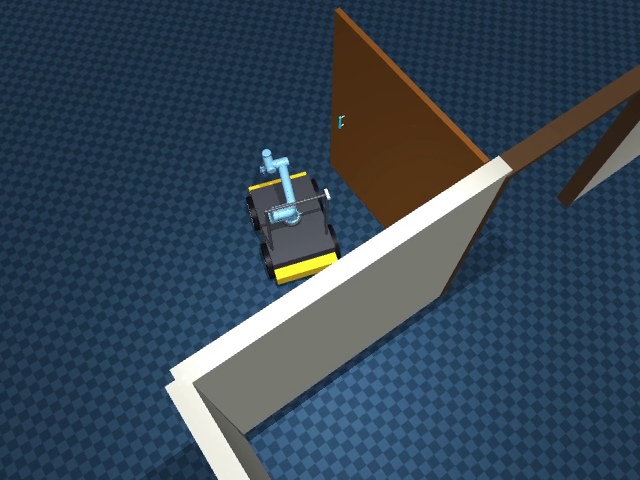
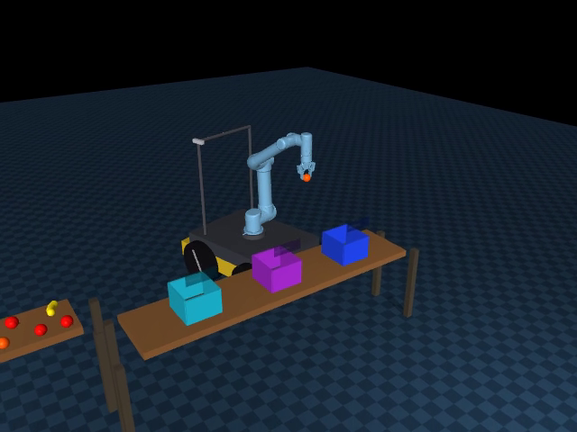
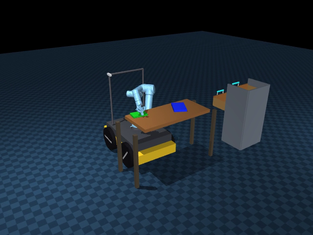
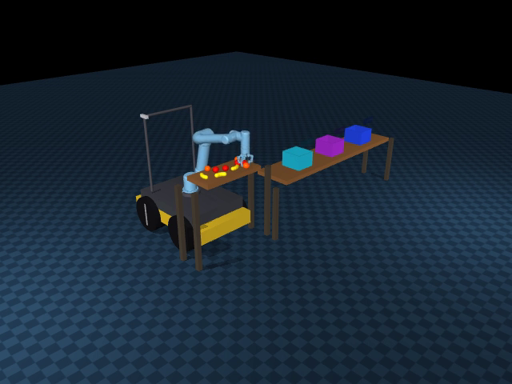
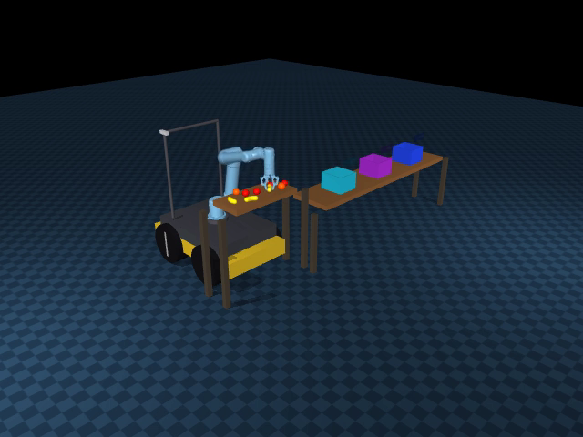
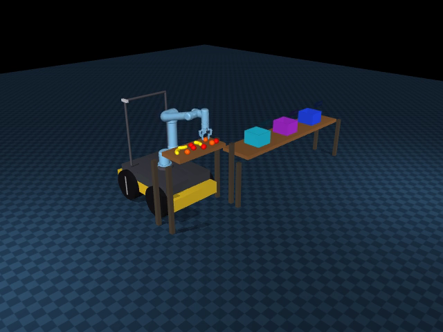

真实接触移动操作 · 几何规划控制 · 双视角 π₀.₅
Husky A200 · Original UR5 · Robotiq 2F-85 · MuJoCo 3.6.0
在同一个MuJoCo物理系统中完成门操作、十果分类、三书抽屉收纳，并将双视角π₀.₅接入正常机械臂执行器。传统导航/FSM与学习型短技能共存；没有通过物体瞬移、隐藏焊接或被动关节驱动伪造接触操作。
| 移动与规划 A*、外形膨胀、真实轮驱动、Dock与操作驻车 | 接触与操作 多初值IK、持物碰撞、推书侧抓、门臂协同 | 视觉语言动作 双RGB、实际状态、绝对关节动作、真实后训练与闭环推理 |
点击封面查看或下载真实连续视频。前三项是完整传统任务开发演示，后三项是驻车指定目标抓起保持；VLA录像没有放置或完整十果分类。演示实例不替代下方固定评测。
 开门 · 入室 · 关门 锁边把手 / Oracle / 宽门洞 |  10果连续分类 开发回合 / 全部正确入筐 |  三书 · 三层 · 返航 120/180/240mm长书本 / Oracle |
 π₀.₅ 苹果抓取 |  π₀.₅ 香蕉抓取 |  π₀.₅ 橘子抓取 |
逐段评分与来源。浏览器不支持直接播放时，可下载MP4后播放。完整材料下载：
flowchart LR
TASK[任务FSM] --> NAV[A*与轮式导航]
TASK --> GEO[几何专家与RGB-D]
TASK --> VLA[双视角π₀.₅]
GEO --> IK[IK与持物碰撞路径]
VLA --> ACT[动作块与安全执行]
IK --> CTRL[关节控制器]
ACT --> CTRL
NAV --> SIM[MuJoCo真实物理]
CTRL --> SIM
SIM --> FEEDBACK[相机、状态与接触反馈]
FEEDBACK --> TASK
VLA只学习驻车机械臂七维动作；门/抽屉约束控制与底盘导航保留传统方案。机身理想RGB-D与腕部虚拟RGB不是完整D435i物理传感器模型。门/抽屉和部分书本使用声明的Oracle几何，接触/容纳评分有仿真辅助。
| 问题 | 采取的方法 | 实际证据 |
|---|---|---|
| 第三书仍夹住却被判滑移 | 世界向量改为工具坐标下的相对位移，原阈值保留 | 同一时刻旧误差25.032mm、新误差2.834mm；重新实抓续作完成 |
| 大书侧抓与柜体碰撞 | 先推后侧抓、有向几何抓点、真实净空上界、持物完整扫掠与已验路径执行 | 多个完整开发回合；冻结散落协议仍有失败 |
| 香蕉力大仍滚转 | 区分抓取闭合与保持闭合，接触/位姿反馈 | seed420局部保持0.70完成0.381m倒车；漂移18.12→3.04mm |
| 门操作重复重抓 | 底盘/机械臂圆弧协同、安全触发重抓、协调退出 | 同初态36→5抓，2144.86→462.336仿真秒 |
| 数据与执行不一致 | 高层绝对目标/reference/ctrl分开，train-only匹配chunk统计与双频物理重放 | 实际batch4/10000更新，9999完整保存重载与物理执行 |
以上是相应局部/开发对照结论，不外推成全部场景成功率。完整问题证据链。
| 协议 | 结果 | 成功回合平均仿真时间 | 边界 |
|---|---|---|---|
| 正常门完整任务 | 10/10 | 451.237s | 冻结保留种子，Oracle，1.57m门洞 |
| 历史布局完整十果分类 | 2/10 | 1771.290s | 3000s协议，RGB-D及仿真辅助验证 |
| 新散落三尺寸书收纳返航 | 4/10 | 1207.823s | 冻结保留种子，Oracle |
| VLA十果桌面指定目标抓取保持 | 14/30 | 11.300s | 6验证布局与预声明噪声，不含放置 |
传统已执行水果抬升为53/57（苹果20/23、香蕉15/16、橘子18/18），含重试和提前终止，与完整任务分母不同。VLA固定验证按类为2/10、6/10、6/10。展示集按成功/失败数量整理，含重复初态和历史诊断，不用其构成估计独立成功率。
本发布目录实际通过258/258本地回归测试（97.29s），另有流式ZIP发布辅助测试1/1通过。日志随证据保存；后续只补文档与归档，不改控制或评分。模块测试、数据重放和loss下降都不等于完整任务通过。
2315f953b3ee8949915f315b9c938ef6f0ca7a5e9397562d82c238d90b4c67c8。本地仿真使用Python3.10；服务器OpenPI使用独立Python3.11环境。不要把两套依赖混装。
# 在项目根目录，使用已安装的仿真环境
MUJOCO_GL=egl python -m pytest -q
# 新开发输出；不覆盖已有冻结正式结果
MUJOCO_GL=egl python scripts/run_stage7_isolated.py --task door --mode oracle --seed 2101 --door-profile aligned_handles_v3 --config configs/door_continuous_contact_frozen_v4.json --output outputs/new_door_demo --record
首次安装参考requirements.lock.txt、environment.yml和scripts/setup_env.sh。VLA推理/训练另需合法权重、Tokenizer、原始数据、对应GPU及独立环境，仓库不会自动下载或启动训练。
src/robot_exam/ 控制、导航、感知、任务FSM、数据和VLA
scripts/ 构建、运行、评估、采数、训练、推理和资料导出
configs/ 模型来源、场景、控制器与冻结协议
assets/ scenes/ third_party/ 小型模型与原始许可
server/ 实际训练源码、OpenPI、锁文件与norm快照
benchmarks/frozen/ 三任务原冻结源码及164项SHA核验
media/ 代表性连续视频、评分和来源
evidence/ 原始统计与问题修复证据
docs/ 最终技术总结、问题措施、运行说明
模型权重、完整训练数据、虚拟环境、缓存、认证信息和私有开发日记不在仓库中。第三方代码/模型遵循各自许可证；自研根许可证由作者另行确定。这里是MuJoCo仿真工程，不代表真实机器人部署结果。